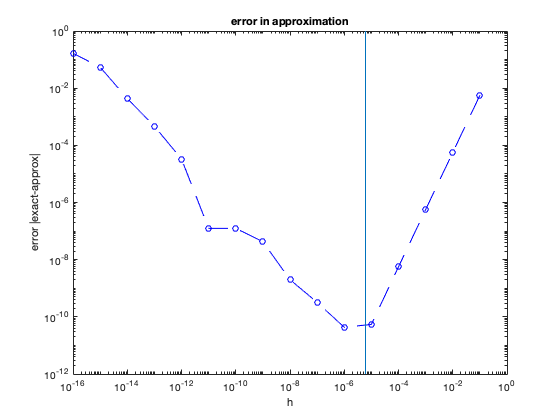
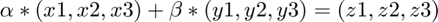

Contents
Homework 3
Juan A. Ormaza September 13, 2021 CS375
clear all; clc; format long e; close all;
Problem 1
central_difference=@(h) (exp(1.5*h)-exp(1.5*-h))./(2*h); exact_solution = 1.5*exp(1.5*0); error=@(exact,approx) abs(exact-approx); h=logspace(-1,-16,16); approx_array=central_difference(h); error_array=error(exact_solution,approx_array); figure(1) loglog(h,error_array,'b--o'); hold on line([power(eps,1/3) power(eps,1/3)],[get(gca,'ylim')]); title('error in approximation') xlabel('h'); ylabel('error |exact-approx|') fprintf('Looking at the graph, we can say that result from problem 1d agrees with the graph\n') fprintf('this is because the calculation yields an error of C*machine_epsilon^1/3 and the\n') fprintf('lowest point of the graph is found at that value\n')
Looking at the graph, we can say that result from problem 1d agrees with the graph this is because the calculation yields an error of C*machine_epsilon^1/3 and the lowest point of the graph is found at that value
Problem 3
alpha = 8; A=[1 5 -3;4 -1 9;7 -2 alpha]; B=[1;2;3];
Problem 3.A
%i x=A\B %ii determinant=det(A) %iii rank_of_matrix=rank(A)
x =
4.047619047619047e-01
1.547619047619048e-01
5.952380952380956e-02
determinant =
168
rank_of_matrix =
3
Problem 3.B
alpha = 16; A=[1 5 -3;4 -1 9;7 -2 alpha]; %i x=A\B %ii determinant=det(A) %iii rank_of_matrix=rank(A)
Warning: Matrix is close to singular or badly scaled. Results may be
inaccurate. RCOND = 3.916763e-18.
x =
-1.232205101418091e+15
6.161025507090458e+14
6.161025507090458e+14
determinant =
1.623106411179671e-14
rank_of_matrix =
2
problem 3.b.4
problem iv
Notice that for problem 3.B.iii answer, we find that the rank is 2. This means that the number of independent columns or rows in the matrix is 2. This means, one column is most likely a linear combination of the 2 independent columns. We find that indeed, that is the case. Column three is a linear combination of 1 and 2. To prove this we calculate alpha and beta (see written solution) to calculate the value of these coefficients.

note
Notice, MatLab also has trouble find the determinant of the matrix because a singular matrix has no determinant.
%iv alpha=2; beta=-1; column1 = [1;4;7]; column2 = [5;-1;-2]; fprintf('the result of adding the first and second column with coefficients 2 an -1 is:') column3= alpha*column1 + beta*column2 fprintf('the third row of the matrix is:') A(:,3) fprintf('therefore, the third column is dependent on the 1st and the 2nd')
the result of adding the first and second column with coefficients 2 an -1 is:
column3 =
-3
9
16
the third row of the matrix is:
ans =
-3
9
16
therefore, the third column is dependent on the 1st and the 2nd